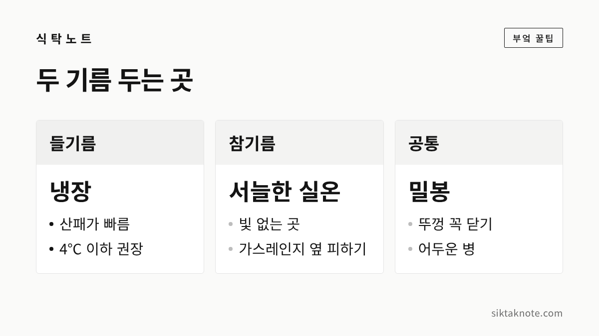
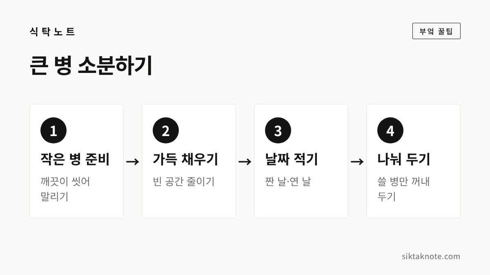

참기름 들기름 보관법 — 들기름은 냉장, 참기름은 서늘한 실온, 산패 냄새 구별법

3줄 요약
- 들기름은 상온에서 산패가 빨라서 냉장 보관이 좋습니다.
- 참기름은 직사광선이 닿지 않는 서늘한 곳에 두면 되는데요, 뚜껑은 꼭 닫아 두세요.
- 찌든 쩐내가 나거나 끈적해진 기름은 아깝더라도 쓰지 않는 게 좋겠습니다.

명절에 고향에서 짜 온 기름이나 방앗간에서 한 병씩 사 온 기름, 집집마다 한두 병은 있으실 텐데요. 참기름과 들기름은 생김새가 비슷해도 보관하는 법이 꽤 다릅니다. 들기름은 냉장고에, 참기름은 서늘한 찬장에 두는 게 기본인데, 왜 그런지 알고 나면 헷갈리지 않으실 거예요.
들기름이 더 빨리 상하는 이유
기름이 공기와 빛, 열을 만나 산화되면서 맛과 냄새가 변하는 걸 산패라고 하는데요. 들기름은 이 산패가 유난히 빠른 기름입니다.
농촌진흥청 설명에 따르면 들기름은 오메가-3 지방산인 알파-리놀렌산이 60% 넘게 들어 있습니다. 같은 성분이 콩기름에는 10% 미만, 참기름에는 1% 미만이라고 하니 차이가 크죠. 이 성분이 몸에는 좋다고 알려져 있지만, 공기와 만나면 쉽게 산화되는 성질이 있거든요. 그래서 고소한 향이 빨리 날아가고 금방 쩐내가 나기 쉽습니다.
반대로 참기름은 상대적으로 산화에 덜 민감한 편이라, 들기름만큼 서두를 필요는 없습니다. 다만 참기름도 불포화지방이 80%쯤 되는 기름이라서, 공기와 빛을 오래 만나면 결국 상한다는 점은 같습니다.

들기름은 냉장고에 넣어 주세요
농촌진흥청이 짜낸 들기름을 4℃, 10℃, 25℃에 나눠 두고 품질 변화를 살펴본 적이 있는데요. 25℃에 둔 들기름은 20주쯤부터 산패 정도를 보여 주는 산가와 과산화물가가 급격히 올라갔습니다. 4℃에 둔 들기름은 40주가 지날 때까지 두 수치에 변화가 없었다고 합니다. 그래서 농촌진흥청은 들기름을 오래 두려면 4℃ 이하 냉장고에 꼭 보관하라고 안내하고 있습니다.
다만 이 실험은 온도에 따라 얼마나 차이가 나는지를 비교한 것이라, 냉장고에 넣으면 무조건 40주를 둬도 된다는 뜻은 아닙니다. 병을 자주 열고 닫으면 그만큼 공기와 만나니까요. 개봉한 들기름은 냉장고에 두되, 되도록 빨리 쓰시는 게 좋겠습니다.
- 냉장고 문 쪽 칸보다는 안쪽 칸이 온도 변화가 적어서 좋습니다.
- 쓸 때만 꺼냈다가 바로 다시 넣어 주세요. 식탁 위에 한나절씩 두는 일이 쌓이면 소용이 줄어듭니다.
- 제품 병에 적힌 보관 방법과 소비기한도 한 번 확인해 두세요.

참기름은 서늘하고 어두운 곳에
참기름은 냉장고까지 가지 않아도 됩니다. 농촌진흥청은 참기름을 햇빛이 직접 들지 않고 온도가 크게 오르내리지 않는 서늘한 곳에 두라고 안내하고 있는데요. 싱크대 아래 찬장이나 그늘진 수납장 정도면 충분합니다.
오히려 피해야 할 곳은 가스레인지 옆과 창가입니다. 요리할 때마다 불 옆에서 데워지고, 햇빛까지 받으면 산패가 빨라지거든요. 손이 자주 가는 자리라 그쪽에 두기 쉬운데, 조금 불편해도 불에서 떨어진 곳으로 옮겨 두시는 게 좋겠습니다.
참기름을 냉장고에 넣으면 뿌옇게 엉기거나 일부가 굳어 따르기 불편해지기도 합니다. 꼭 냉장해야 하는 건 아니라서, 찬장 보관이 더 편한 분이 많습니다. 다만 한여름처럼 부엌이 유난히 더울 때는 냉장고에 잠시 넣어 두는 것도 괜찮습니다. 뿌옇게 된 참기름은 실온에 꺼내 두면 다시 맑아지니 걱정하지 않으셔도 돼요.

병과 뚜껑, 이것만 챙겨도 달라요
기름을 상하게 하는 건 결국 공기와 빛, 열입니다. 식품안전나라에서도 기름류는 직사광선이 닿지 않는 서늘한 곳이나 냉장 상태로 보관하라고 안내하고 있어요.
- 뚜껑은 꼭 닫기: 쓰고 나서 뚜껑을 살짝 걸쳐만 두면, 그 틈으로 공기가 계속 드나듭니다.
- 병 입구 닦기: 따르고 나서 입구에 흘러내린 기름은 키친타월로 닦아 주세요. 입구에 묻은 기름이 먼저 산패하면서 냄새를 풍기기 쉽거든요.
- 빛 가리기: 투명한 병이라면 갈색 병처럼 빛을 가리는 병으로 옮기거나, 병을 신문지나 쿠킹포일로 감싸 두면 좋습니다.
- 새 기름 섞지 않기: 남은 기름에 새 기름을 부어 채우면, 먼저 산화된 기름이 새 기름까지 빨리 상하게 할 수 있습니다. 병을 다 쓰고 씻어 말린 뒤에 새로 담으세요.

큰 병은 작게 나눠 두면 좋습니다

방앗간에서 큰 병으로 짜 오거나 선물로 여러 병을 받으면, 한 병을 몇 달씩 열어 두게 되는데요. 이럴 땐 작은 병에 나눠 담아 두면 공기와 만나는 시간이 확 줄어듭니다.
- 작은 유리병을 깨끗이 씻어 물기 없이 바짝 말립니다. 물기가 남아 있으면 기름이 빨리 상할 수 있어요.
- 기름을 병 입구 가까이까지 채워 병 안의 빈 공간을 줄입니다.
- 뚜껑을 꼭 닫고, 짠 날이나 산 날을 병에 적어 둡니다.
- 지금 쓸 병 하나만 꺼내 두고, 나머지 들기름은 냉장고에, 참기름은 서늘한 곳에 둡니다.
이렇게 해 두면 매번 큰 병을 여닫지 않아도 되니, 마지막 병까지 고소한 향을 지키기 좋습니다.
쩐내가 나면 쓰지 마세요
기름이 산패하면 고소한 냄새 대신 찌든 냄새, 흔히 말하는 쩐내가 납니다. 오래된 과자나 묵은 견과류에서 나는 냄새와 비슷한데요. 아래처럼 변했다면 아깝더라도 요리에 쓰지 않는 게 좋습니다.
- 뚜껑을 열었을 때 고소한 향 대신 찌든 냄새, 쓴 냄새가 납니다.
- 맛을 보면 혀끝이 아리거나 텁텁하고 쓴맛이 남습니다.
- 손가락에 묻혔을 때 예전보다 끈적이고, 병 입구에 끈끈한 막이 생깁니다.
- 색이 처음보다 눈에 띄게 탁하거나 짙어졌습니다.
냄새가 애매할 때는 작은 접시에 조금 따라 코를 가까이 대 보세요. 병째 맡을 때보다 차이가 잘 느껴집니다. 산패한 기름은 끓이거나 볶는다고 원래대로 돌아오지 않으니, 요리에 섞어서 써 버리지 마시고 정리하시는 편이 마음 편합니다.
자주 묻는 질문
들기름도 냉장고에 넣으면 굳나요?
들기름은 냉장고에 넣어도 대개 맑은 상태 그대로 있어서 쓰기에 불편함이 없다고 알려져 있습니다. 참기름처럼 뿌옇게 엉기는 일이 적은 편이에요.
참기름과 들기름을 섞어 두면 오래 가나요?
섞어 두면 들기름이 덜 상한다는 이야기가 많이 돌고 있는데요. 이걸 뒷받침하는 공식 자료는 찾지 못했습니다. 들기름은 그대로 냉장 보관하는 쪽이 확실합니다.
들깨로 사 두는 게 나을까요?
국립식량과학원 연구에서도 들깨 낟알을 실온(25℃)에 둔 것보다 저온(4℃)에 둔 쪽이 품질 변화가 적었습니다. 들깨를 사 두실 때도 서늘한 곳이나 냉장고에 두시는 게 좋겠습니다.
고소한 기름 한 방울이 나물이나 김 맛을 확 살려 주는데요. 기름을 발라 굽는 김은 김 보관법을, 들기름에 지지면 맛있는 두부는 두부 보관법을 함께 봐 두시면 좋겠습니다.